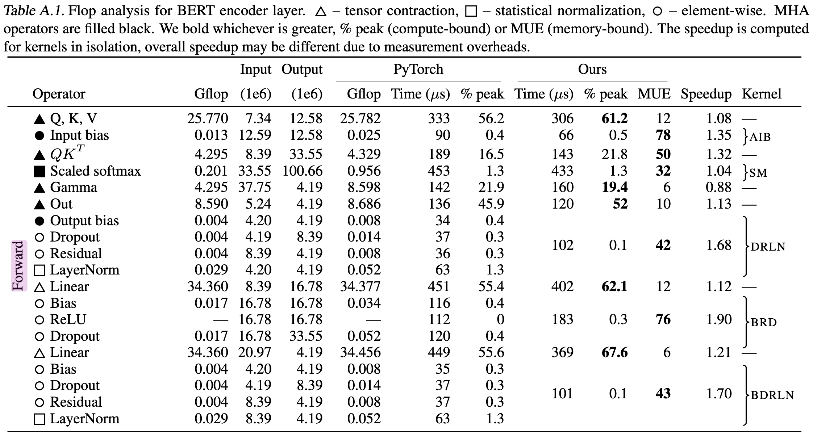

This article serves as low-principles reasoning for thinking about large language model inference performance. I started putting this together to be able to make better predictions, form better explanations and more easily identify problem points for my work at Cohere.
This post assumes some prior knowledge about transformers, say at having understood most of The Illustrated Transformer but not having internalised all of it. Familiarity with this parameter counting post which I developed along with this one would also be useful.
This is entirely focused on decoder-only architectures but can be extrapolated to encoder-decoder or encoder-only architectures. There is a lovely amount of understanding that can be developed without difficult math/accelerator knowledge or even experiments!
kv cache
For sampling, transformer inference consists of processing a provided prompt/context (which can happen in parallel), and then sampling additional tokens one by one. The process needs to refer to the context from the prompt and previously sampled tokens for the key and value components of its self-attention layers. This context is provided in matrices known as the kv cache, aka past cache (the open source GPT-2 implementation called it past).
The purpose of this is to avoid recalculations of those values every time we wanted to generate a new token. With the computed \(k, v \) values, we can save quite a bit of computation at the cost of some storage. Per token, the number of bytes we store is
Where we have 2 for \(k\) and \(v\), we store that per each layer, and each of those values is a \( n_\text{heads}\times d_\text{head}\) matrix. Then multiply by two again for the number of bytes (we'll assume 16-bit formats throughout the post).
The weights that we multiply by the token embeddings are \(W_\text{k}, W_\text{v} \in \mathbb{R}^{d_\text{model}\times d_\text{model}}\) and then each token embedding is \(t_\text{e}\in \mathbb{R}^{1\times d_\text{model}}\). So then the flops to compute \(k\) and \(v\) for all our layers is
To calculate compute for just \(\text{k}\) we multiply \(t_\text{e}\) by \(W_\text{k}\), which takes \(2 \cdot {d_\text{model}}^2\) flops, as the computation for a matrix-vector multiplication is \(2mn\) given \(A \in \mathbb{R}^{m\times n}, b \in \mathbb{R}^{n}\). We have another factor of two as we do \(k\) and \(v\) and then a factor of \(n_\text{layers}\).
This means for a 52B parameter model (taking Anthropic's, where \(d_\text{model} = 8192\) and \(n_\text{layers} = 64\)). The flops are;
We only need to read all the kv weights once. So that would be \(2 \cdot 2 \cdot n_\text{layers} \cdot {d_\text{model}}^2\) bytes. Say we have an A100 GPU, where we do \(312\text{e}12\) flops per second and \(1.5\text{e}12\) bytes per second of memory bandwidth.
None of the model architecture matters anymore — we get a distinct ratio here of 208 given this hardware specification. This means that if we're going to compute kv for one token, it'll take the same amount of time to compute for up to 208 tokens! For 52B this is 11.4 milliseconds (in practice, we'd use four GPUs in parallel so it would actually be ~3 milliseconds, more in following sections). In contrast, it takes 20ms to generate a single token for a 52B model on 4 GPUs, which we'll learn to calculate in later sections.
TODO: diagram about which operations happen to which parts of the inferencing.
Calculating for a kv cache token is exactly 1/6th of the compute of doing a decoding step, but is also divided by a large factor (up to 208) for the parallelism. In general, these forwards passes (what we experience in getting logits, embeddings and training) are very cheap because of that parallelism.
This is not the whole story (given overheads and tradeoffs associated with storing this cache). If we're serving small requests we may be memory bandwidth bound rather than flops, in which case we don't want to try saving flop time, rather we want to use that time to get the weights through our memory.
capacity
Given the number of parameters, and the amount of kv cache we need to store, we can start worrying about how much space is on our accelerators to do that! Now is a good time to put up a table of our accelerators — for this post we'll only work with Nvidia A100 GPUs (which are generally speaking, the best GPUs we can get for inference).
| A100 40GB SXM | A100 80GB SXM | |
|---|---|---|
| BFLOAT16 Flops | 312TF | 312TF |
| Capacity | 40GB | 80GB |
| GPU Memory Bandwidth | 1555GB/s | 2039GB/s |
| Communication Bandwidth | 300GB/s | 300GB/s |
For now we only need to pay attention to capacity. The numbers are pulled from here, but we’ve marked the communication bandwidth as 300GB/s instead of 600GB/s because Nvidia is adding up 300 GB/s into each chip and 300 GB/s out of each chip rather than presenting a bidirectional number.
Given the parameter count, we can multiply by two to get bytes. So to calculate the size of the weights for a 52B model.
Oh no! This doesn't fit in one GPU! In practice, people can't really get access to the 80GB GPUs yet (see GCP and AWS GPU offerings). So for the 40GB GPUs, we'd need at least three GPUs just to have all the weights loaded in (will discuss how to do that sharding later). That leaves us \(120-104 = 16GB\) left for our kv cache. Is that enough? Back to our equation for kv cache memory per token, again with a 52B model;
And then we'd do \(16/0.002 \approx 8000\) tokens can fit into our kv cache with this GPU set up, or that we could do up to a batch size 40 where each item is 200 tokens. For four GPUs, we'd get \(56/0.002 \approx 23000\). We would want to go for the four GPUs since we'll want to be able to do higher batch sizes, and it's silly to to divide powers of two over three GPUs.
There's some extra space used by intermediate calculation steps, but they're negligible.
model parallelism
I'm not going to build up full understanding of model parallelism and all the implementation details, because HuggingFace has done a great job, but here's a description of it that's particularly relevant for inferencing.
We have all these computations we'd like to do. All these matmuls on big matrices are expensive! Our model has limited memory bandwidth, and we have to pass all our weights through to complete a single decoding step! Wouldn't it be nice to insert more GPUs to start dividing that compute cost by an arbitrarily large number (which in practice, is 16 GPUs attached to one machine, but maybe AWS can only do 8 [I haven't found evidence that they offer 16]).
The answer, is that it's tricky — how do we split up our weights? We have to pay some latency to communicate between the models — when does it occur, how often and how much?
We will assume Tensor Parallel (also sometimes called model parallel) where we will split down the middle of the model. In pipeline parallel we would split the layers across GPUs, in tensor parallel, we vertically cut through the layer stack. So that means that for some operations one accelerator can run the computations for the shard it has, and the communication doesn't have to occur until a computation needs to be done with all the previous steps.
TODO: explain why we don't pipeline parallel, doesn't use bw, explain how multiplies can be slpit. also can defo make a better diagram
For our inferencing this happens at;
- once for our qkv, as we can compute the qkv on respective hosts, then do the qk multiplication + division and then communicate to do the softmax.
- once after computing the output projection, to do a layer norm.
- once after the layer norm
- once after the MLP layer to do the softmax
TODO: reason through why and why not all the comms
There are some other optimisations that can go on and nontrivial implementation details that go into tensor parallelism which are not in scope!
latency calculations
We've discussed the capacity fairly thoroughly, mapped out comms in the model parallelism section and discussed general compute steps.

For memory bandwidth, the latency paid is the time it takes to run all the weights through the bandwidth while we do compute on them. If we run our computations slower than we can load the weights, then we are flops bound and the memory bandwidth isn't a factor in latency calculations. If we have a small number of multiplies to do per parameter, then maybe we'll be throttled by memory bandwidth. Flops are increased by both batch size and number of parameters, while memory is only increased by number of parameters.
For comms, it's not about boundedness, but rather about adding a latency term and a throughput term (the 300GB/s on an A100). Something tricky about the latency side of this figure is that it's not reported, so the best I can do is guess "approximately small" for which some experienced people told me that 10 microseconds is a good bet.
Because of the compute factors, to calculate the latency of a single token decoding step we'd have two formulas - one for memory bandwidth bound (small batch) and another for flops bound (large batch). For large batch, we'll drop the latency factor. In practice, we'd want to profile to find out.
Equations for a small batch (say 1, so we can drop the batch factor) would be; (where \(N\) is the number of accelerators)
There is \(2 \cdot P\) because we need to pass all the parameters through the memory, and each parameter is two bytes. \(A_\text{bm}\) is the accelerator memory bandwidth, and this cost is split across accelerators. For comms, we have \( 4 \cdot n_\text{layers} \) and then the 10 microseconds that we made up. It leaves out a bunch of factors, but I'm happy throwing them away for simplicity as the latency is guessed anyway (and comms is small relative to compute, which we'll see in a bit).
For large batches (say 512), where \(B\) is the batch size;
Where \(A_f\) is the flops of the accelerator and \(A_c\) is the comms bandwidth. We do \(2\cdot P\) flops of operations, which can be intuited by the fact that we matmul through all the parameters, and as mentioned earlier, a matrix-vector multiplication is \(2mn\) given \(A \in \mathbb{R}^{m\times n}, b \in \mathbb{R}^{n}\).
For comms, we see the four communication steps per layer all multiplied by \(d_{model}\) as explained in the model parallelism section. Then it's all divided by the comms bandwidth.
For a small batch, it's 27 ms per token generated.
For a large batch of 512, for a total of 62ms per token generated (per batch, so in the 62ms 512 tokens are generated).
As an exercise, try calculating the large batch speed for a 52B on 4xGPUs at batch size 256. The compute should be about 21ms and comms should be about 2ms.
Also note here, that we don't want the comms to be greater than the compute! In these calculations I summed the comms and compute time, but logically there is no reason they can't be partially run in parallel (though it's hard).
These numbers still land quite close to what should be acquired in practice, and lean towards being an optimal compute case, as it assumes optimal hardware usage, doesn't factor in softmaxes, assumes zero comms latency and ignores many other smaller factors. I'd be surprised if someone had an inferencing setup that resulted in numbers lower than what this math comes up with given some core setup details (like int8 would call for different math).
batch sizes
In the previous section, we have two calculations for when something memory bandwidth bound versus flops bound. To figure out which is at play we can compare these numbers;
We're dealing with the same ratio we found in the kv cache section. The min batch size for memory bandwidth bound is \(A_\text{bw}/A_c = 208\). This is a handy ratio!
To calculate when the capacity goes from mostly kv cache to mostly weights is trivial, and also isn't a binary in the same way (nothing special happens when your kv cache starts taking up more memory than your weights). But what about comms? For comms we want to see that the rate is higher than \(A_c\), like so;
TODO: explain how/when comms hits throughput
Something oversimplified about comms is that it happens at four different steps, which means we don't just want our compute time to be longer than our comms time, we want it to be the case at each step. For that, we have a weirder ratio: flops per byte of comms. Here's a nice chart of our computations, which will also be useful in the section below.
| \(q, k, v\) | \(o\) | \(w_1\) | \(w_2\) | |
|---|---|---|---|---|
| flops | \(3B({d_\text{model}}^2)\) | \(B({d_\text{model}}^2)\) | \(4B({d_\text{model}}^2)\) | \(4B({d_\text{model}}^2)\) |
| bytes of comms | \(B(d_\text{model})\) | \(B(d_\text{model})\) | \(B(d_\text{model})\) | \(B(d_\text{model})\) |
| flops/byte | \(3(d_\text{model})\) | \(d_\text{model}\) | \(4(d_\text{model})\) | \(4(d_\text{model})\) |
\(312\text{e}12 \div 300\text{e}9 = 1040\), which is our flops per byte of comms for our A100s. We want the values in the last row to be larger than our hardware flops per byte so that we stay flops bound (assuming we are not memory bound here). For any model with an embedding dimension over 1024, we're safe! For 512, it's a little awkward.
flops counting
Previously;
We do \(2\cdot P\) flops of operations, which can be intuited by the fact that we matmul through all the parameters, and as mentioned earlier, a matrix-vector multiplication is \(2mn\) given \(A \in \mathbb{R}^{m\times n}, b \in \mathbb{R}^{n}\).
This is correct reasoning, but also incomplete. For complete reasoning, the easiest thing to do is to walk through all the transformer steps and check that we get \(2P\).
To start, why is a matmul of a matrix-vector 2mn? These lecture notes explain that fairly thoroughly. A matrix-matrix multiplication is \(2mnp\) if we multiplied \(A \in \mathbb{R}^{m\times n}, B \in \mathbb{R}^{n \times p}\). And then a vector-vector multiplication is just \(2n\).
The following calculations are per token, per layer. I describe \(W_q, W_k, W_v \in \mathbb{R}^{d_\text{model}\times d_\text{model}}\) where it's more accurate to say we have \(W_q^i, W_k^i, W_v^i \in \mathbb{R}^{d_\text{model}\times d_\text{head}}\), where \(i\) goes up to \(n_\text{heads}\). But for the sake of calculating latency, I simplify \(W_q, W_k, W_v\) to include all the heads.
- Computing qkv
- Let \(t_e\) be our token embedding. Then we multiply \(t_e \in \mathbb{R}^{1\times d_\text{model}}\) by \(W_q, W_k, W_v \in \mathbb{R}^{d_\text{model}\times d_\text{model}}\). We do that multiplication three times for each of \(q, k, v\).
- Flop count: \({2 \cdot 3 \cdot d_\text{model}}^2\)
- Calculate z
- This is \(\text{softmax}((q\cdot k)\div\sqrt{d_\text{head}}) \cdot v = z\)
- No matrices are multiplied, the number of flops is some factor of \(d_\text{model}\).
- Multiply by the output projection matrix
- We multiply \(W_o \in \mathbb{R}^{d_\text{model}\times d_\text{model}}\), by \(z \in \mathbb{R}^{d_\text{model}\times1}\).
- Flop count: \(2 \cdot {d_\text{model}}^2\)
- Feed-forward
- We have our MLP weights \(W_1, W_2 \in \mathbb{R}^{4\times d_\text{model}} \).
- The MLP is two linear transformations (read: matmul), with a ReLU in the middle.
- Then the flops are \(2\cdot 4 \cdot d_\text{model} \cdot d_\text{model}\) for the two linear transformations.
- Flop count: \(2\cdot 8 \cdot {d_\text{model}}^2 \)
- Some other things
- There are typically layernorms that happen after each attention, where the weights there are a vector of length \(d_\text{model}\).
- There's another linear layer and then a softmax that sits on top, which is our output (token) embedding or unembedding or de-embedding or embedding\(^{-1}\).
- The original transformer has a cosine absolute positional encoding scheme, which is an addition operation on the token embedding.
Adding up all the flops!
Subbing in our 8192 model, we should get about 100B flops;
103079215104 over two is about 51.5B. We're a lil under (we get 51.5B instead of 52B) but if we recall from the parameter counting session, there are 51.5B parameters if we exclude the token embeddings and there is just about half a billion of token embeddings given their 65536 vocab size. It would be reasonable to do the latency calculations with \(2\cdot 12\cdot n_\text{layers} \cdot {d_\text{model}}^2\) instead of \(2\cdot P\), but it's less than a 2% difference.
What about the the calculation of \(z\) and all the other steps I didn't count? Those are all vector-vector (or even vector-scalar) operations, so they are built around a factor of \(d_\text{model}\) rather than \({d_\text{model}}^2\). Say we have about 100 of these operations, it would come out to a hundred million flops, which is 0.1% of the number of flops we counted.
the other calculations
Data Movement Is All You Need has a nice way of classifying operations. We have tensor contractions, which are the big matmuls we've mostly cared about (including the linear layers). Then there are statistical normalisations, the softmax and layernorm. Finally, which this post has completely ignored till now are element-wise operators, which are things like biases, dropouts and activations.
The reported flops on our hardware is specificially for the multiply-add operations so it would not be right to count it in there even if we could count the flops. Further more, it's probably going to cost memory to do the softmax read/writes and we're going to be memory bandwidth bound as that's what the bandwidth to flops ratio favours. Large batch sizes can't save us here as the read would have to occur for each item in the batch.
I'm going to break character on the first-principles aspect of this and discuss Table A.1 from the Data Movement Is All You Need paper. Here we see that the latency for softmax is actually slightly higher than the calculations for qkv. This is a little concerning!

There's even more latency that hasn't been factored in, for the same reason the softmax is memory bound, so is the multiplication of qk which in the paper takes a third of the time as the softmax takes. The ReLU and dropout are also quite expensive.
The way we can tell that the softmax here is not perfectly fused is by counting the number of read-writes we should need. In theory it can just be one read and one write. For qk, it would be two reads and one write (in practice, the two reads can probably be saved). The three to one ratio then, indicates that the softmax is doing more memory passes than is optimal. In theoryland the entire attention layer is one fused kernel and approximately all of that memory overhead for the intermediate steps go away (there are some absolute details which makes it "approximately all" and not "all" even in theoryland).
It's also worth noting that the percentage of time these operations take get smaller quickly as model size increases as the memory will increase on the order of \(d_\text{model}\) while the flops increase on the order of \({d_\text{model}}^2\) — per layer. The paper is a 336M param model, \(d_\text{model} = 1024, n_\text{layers} = 24\).
I added up the latency of all the values in the "Ours" column that were memory bound, including the element-wise operations. The result is that these intermediate steps take 43% of the time. In a model of size 52B (where \(d_\text{model}\) is 8 times larger, we see these operations become negligible.
The duration of these memory bound intermediate operations will take 8 times longer as the operations are vectors of length \(d_\text{model}\). However, the number of flops will increase by 64 times, which means the flop time increases by 64 times.
So using the optimisations in that paper, a 52B model inference latency would be about 5% of these intermediate calculations we didn't factor into latency. But these numbers are from real runs! They include things that aren't perfect.
exercises
-
How would one serve a Gopher sized model? What would the expected latencies be?
-
In the capacity section, we discuss a bit the number of accelerators we'd like to give a model. Given understanding about communication bandwidth, flops vs memory boundedness and how batch sizes affect latency, what tradeoffs and calculations should we consider for using more GPUs than is necessary for capacity?
-
In the batch sizes section, we went a bit off topic and talked about the flops per byte of communication. What are the tradeoffs if we had an embedding dimension size of 512?
acknowledgements
Would like to extend extremely large amount of credit to James Bradbury for his help in teaching me about performance concepts and being around for many iterations of this post in a very short time. To Jim Wu for teaching me how to write math notation and reviewing. Feedback from Mohammad Bavarian and Taylor Rogalski has been incorporated into this post for your enjoyment and benefit!